install.packages("ggplot2")Graphics in R
As with all labs, please complete this lab using RStudio running on the UH Koa Server. Access the Koa Server at koa.its.hawaii.edu and use your UH credentials to log in. If needed, refer back to “Setup” and “Lab 1” for instructions on access, setting up your account, and how to turn in your lab report.
Goals
- Know how to load packages to expand the capabilities of R
- Know some basic graphical formats and when they are useful
- Make graphs in R, such as histograms, bar charts, box plots, and scatter plots
- Be able to suggest improvements to basic graphs to improve readability and accurate communication
Learning the Tools
Extending R’s capabilities with packages
R has a lot of power in its basic form, but one of the most important parts about R is that it is expandable by the work of other people. These expansions are usually released in “packages”.
Each package needs to be installed on your computer only once, but to be used it has to be loaded into R during each session.
To install a package in RStudio, click on the packages tab from the sub-window with tables for Files, Plots, Packages, Help, and Viewer. Immediately below that will be a button labeled “Install” – click that and a window will open.
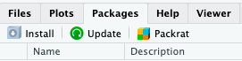
In the second row (labeled “Packages”), type ggplot2. Make sure the box for “Install dependencies” near the bottom is clicked, and then click the “Install” button at bottom right. This will install the graphics package ggplot2.
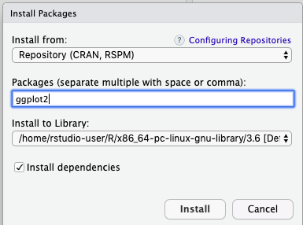
Alternatively, you can also use a function to install packages:
Installed packages will be available for future work sessions on Koa Server without needing to go through the installation process again. This is also true when using your own computer. But you will need to re-install packages after software updates.
Loading a package
Once a package is installed, it needs to be loaded into R during a session if you want to use it. You do this with the function called library().
library(ggplot2)Now we can start making graphics with the ggplot2 package.
ggplot
While base R has ample graphic capabilities, functions from the ggplot2 package are becoming the de facto standard for scientific graphics because they allow more easy customization of plots.
To make a graph with ggplot2, you need to specify at least two elements in your command. The first uses the function ggplot itself, to specify which data frame you want to visualize and also which variables are to be plotted. The second part tells R what kind of graph to make, using a geom function. The odd part is that these two parts are put together with a + sign. It’s simplest to see this with an example. We’ll draw a histogram with ggplot in the next section.
Histograms
Useful when:
- Response variable is numerical
A histogram represents the frequency distribution of a numerical variable in a sample.
Let’s see how to make a basic histogram using the age data from the Titanic data set. Make sure you have loaded the data (using read.csv()) into a data frame called titanic_data.
titanic_data <- read.csv("biol220_class/students/rominger/data/titanic.csv")Here’s the ggplot2 code to make a simple histogram of age:
ggplot(titanic_data, aes(x = age)) +
geom_histogram()`stat_bin()` using `bins = 30`. Pick better value `binwidth`.Warning: Removed 680 rows containing non-finite outside the scale range
(`stat_bin()`).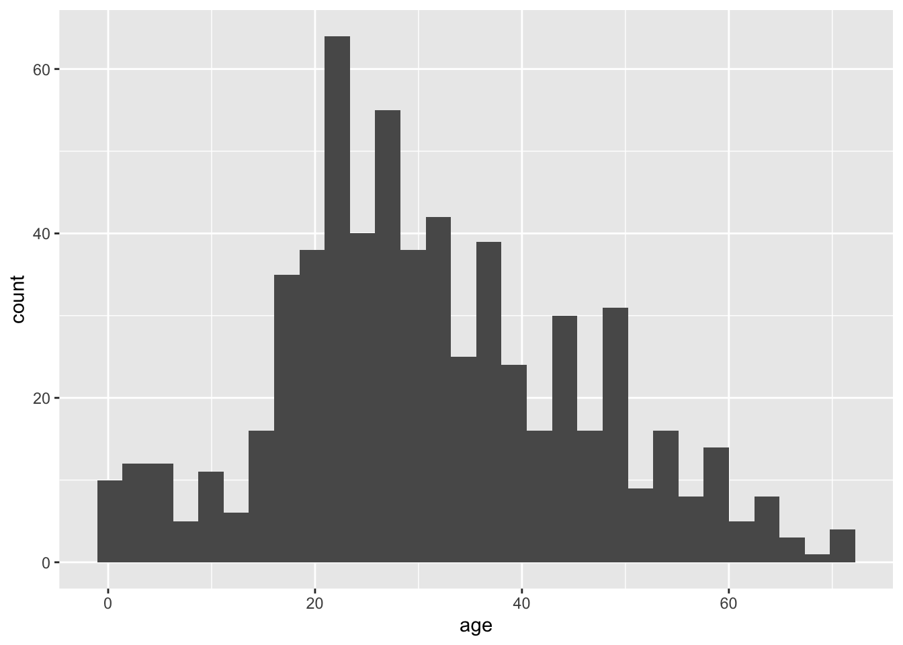
Notice that there are two functions called here, put together in a single command with a + sign. You don’t have to put a line break after the + (R ignores it), but it makes the code more readable. The first function is ggplot, and it has two input arguments. The first is titanic_data, this is the name of the data frame containing the variables that we want to graph. The second input to ggplot is an aes function. In this case, the aes function tells R that we want Age to be the \(x\)-variable (i.e. the variable that is displayed along the \(x\)-axis). The “aes” stands for “aesthetics”.
The second function in this command is geom_histogram(). This is the part that tells R that the “geometry” of our plot should be a histogram.
Running this should give a plot that look something like this:

This is not the most beautiful graph in the world, but it conveys the information. At the end of this tutorial we’ll see a couple of options that can make a ggplot graph look a little better.
Bar graphs
Useful when:
- Response variable is categorical
A bar graph plots the frequency distribution of a categorical variable. With ggplot, the syntax for a bar graph is very similar to that for a histogram. For example, here is a bar graph for the categorical variable sex in the titanic data set:
ggplot(titanic_data, aes(x = sex)) +
geom_bar(stat = "count")Aside from specifying a different variable for \(x\) in the aes function, we use a different geom function here, geom_bar, and specify the statistic we want to draw, which is the count (or frequency) of the different categories. The result should look like this:
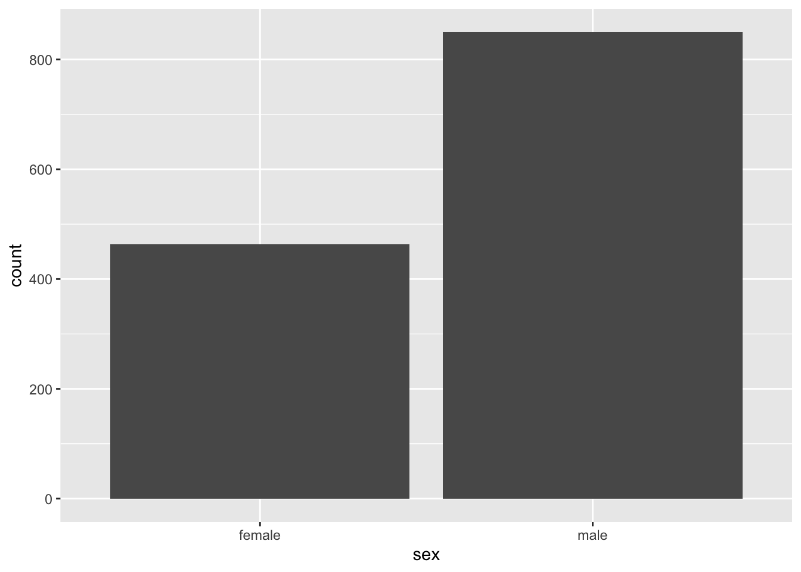
Boxplots
Useful when:
- Explanatory variable is categorical
- Response variable is numerical
A boxplot is a convenient way of showing the distribution of a numerical variable in multiple groups. Here’s the code to draw a boxplot for age in the titanic data set, separately for each recorded sex:
ggplot(titanic_data, aes(x = sex, y = age)) +
geom_boxplot()Notice that the \(y\) variable here is age, and \(x\) is the categorical variable sex that goes on the \(x\)-axis. The other new feature here is the new geom function, geom_boxplot().
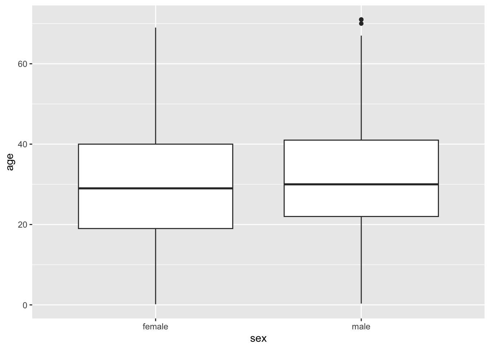
Here the thick bar in the middle of each boxplot is the median of that group. The upper and lower bounds of the box extend from the first to the third quartile. The vertical lines are called whiskers, and they cover most of the range of the data (except when data points are pretty far from the median, then they are plotted as individual dots, as on the male boxplot).
Scatterplots
Useful when:
- Explanatory variable is numerical
- Response variable is numerical
Scatterplots shows the relationship between two numerical variables.
The titanic data set does not have two numerical variables, so let’s use a different data set. We will plot the relationship between sea surface temperature and species richness of reef fishes as compiled by Barneche et. al (2019). These data come from many different published fish surveys conducted by many different researchers all around the world. Barneche and colleagues compiled those data to try to understand what environmental variables predict the species richness of reef fish. Let’s find out!
You can load the data with:
reef_fish <- read.csv("data/global-reef-fish.csv")To make a scatter plot of the variables temp_C and spp_richness with ggplot, you need to specify the \(x\) and \(y\) variables, and use geom_point():
# Side note: I've added a line break between arguments in ggplot()
# This has no effect on the code, but makes it easier to read IMO
ggplot(reef_fish,
aes(x = temp_C, y = spp_richness)) +
geom_point()The result look like this:
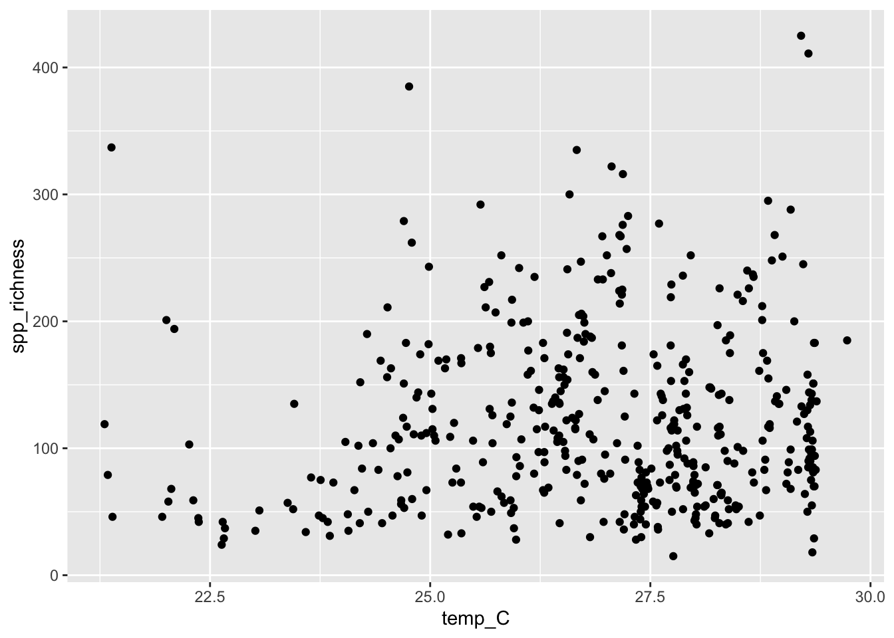
Better looking graphics with options
The code we have listed here for graphics barely scratches the surface of what ggplot2, and R as a whole, are capable of. Not only are there far more choices about the kinds of plots available, but there are many, many options for customizing the look and feel of each graph. You can choose the font, the font size, the colors, the style of the axes labels, etc., and you can customize the legends and axes legends nearly as much as you want.
Let’s dig a little deeper into just a couple of options that you can add to any of the forgoing graphs to make them look a little better. For example, you can change the text of the \(x\)-axis label or the \(y\)-axis label by using xlab() or ylab(). Let’s do that for the scatterplot, to make the labels a little nicer to read for humans.
ggplot(reef_fish,
aes(x = temp_C, y = spp_richness)) +
geom_point() +
xlab("Temperature (degrees C)") +
ylab("Species richness")The labels that we want to add are included in quotes inside the xlab() and ylab() functions. Here is what appears:
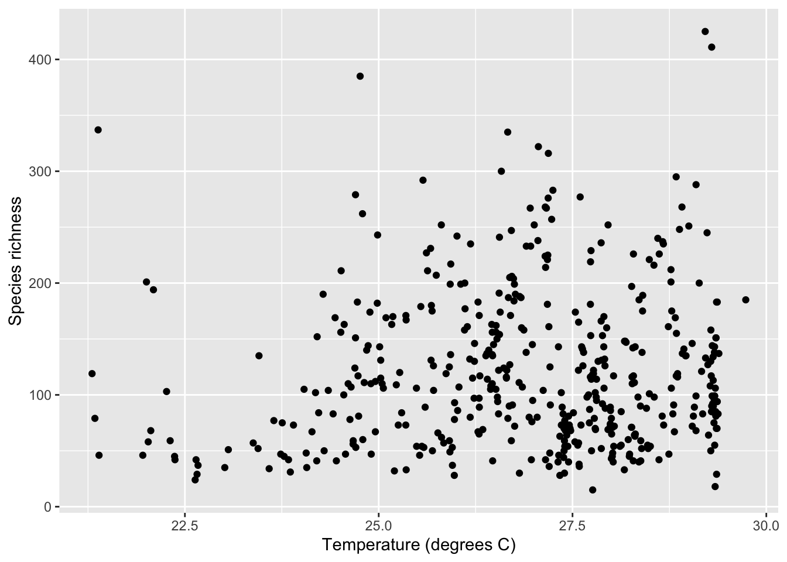
It can also be nice to remove the default gray background, to make what some feel is a cleaner graph. Try adding
+ theme_minimal()to the end of one of your lines of code making a graph, to see whether you prefer the result compared to the default design.
Color palettes
It is important to use a palette that will be clear to color blind individuals and, in some cases, to those who view a printed version in greyscale. There are bewildering array of options, but the viridis palettes accomplish these goals well (read more here). We’ll revisit the histogram example above and view the age distribution on the Titanic by sex (multiple histogram). This is a bit more advanced than what we’ve covered so far, but hang in there. We’ll go step-by-step.
The cool thing about ggplot2 is we can assign a large number of graphical features (size, color, fill, shape, line type, etc.) to variables on our data. We’ll do that using the fill = ... argument in the aes() function to make the fill of the bars dependent on sex.
ggplot(titanic_data, aes(x = age, fill = sex)) +
geom_histogram()`stat_bin()` using `bins = 30`. Pick better value `binwidth`.Warning: Removed 680 rows containing non-finite outside the scale range
(`stat_bin()`).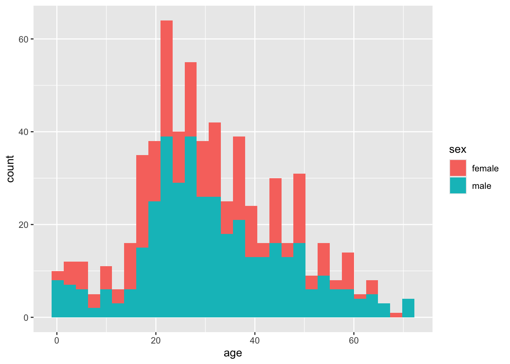
That works, but it’s pretty ugly. For one thing, the bars are stacked on top of one another, so it’s hard to see the separate histograms for males and females. We’ll fix that by using the position = ... argument in the geom_histogram() function like this:
ggplot(titanic_data, aes(x = age, fill = sex)) +
# I will interleave comments to explain what's going on
# position = position_identity() stops the bars from stacking
geom_histogram(position = position_identity())`stat_bin()` using `bins = 30`. Pick better value `binwidth`.Warning: Removed 680 rows containing non-finite outside the scale range
(`stat_bin()`).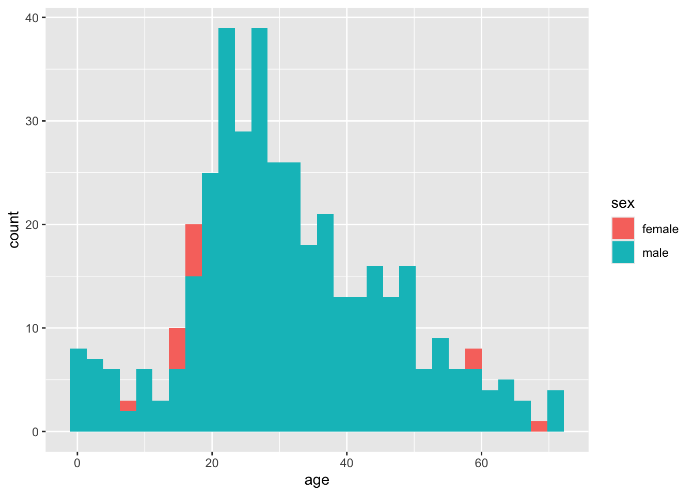
Well, that’s worse! Now the male bars are blocking the female bars. Let’s add a couple more arguments, making the color 50% transparent using the alpha = ... argument. I’ll also make the color around the bars black so we can see them better.
ggplot(titanic_data, aes(x = age, fill = sex)) +
# alpha = 0.5 makes bars transparent
# color = "black" adds black lines around bars
geom_histogram(alpha = 0.5, color = "black",
position = position_identity())`stat_bin()` using `bins = 30`. Pick better value `binwidth`.Warning: Removed 680 rows containing non-finite outside the scale range
(`stat_bin()`).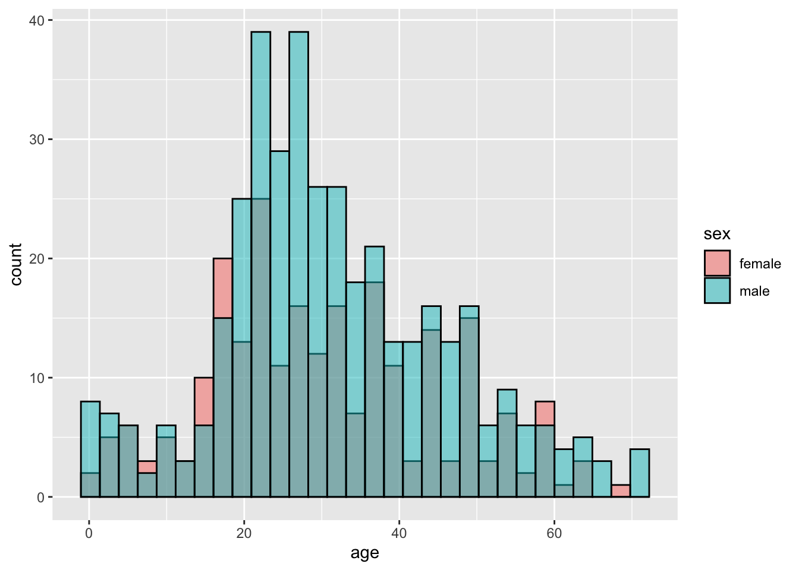
Better, but not great. Let’s use the facet_grid() function to put the histograms on separate panels. For this, we have to put sex in quotes (learning when things need to be quoted or not is frustrating).
ggplot(titanic_data, aes(x = age, fill = sex)) +
# facet_grid() makes separate panels for each sex
facet_grid(rows = "sex") +
geom_histogram(alpha = 0.5, color = "black",
position = position_identity())`stat_bin()` using `bins = 30`. Pick better value `binwidth`.Warning: Removed 680 rows containing non-finite outside the scale range
(`stat_bin()`).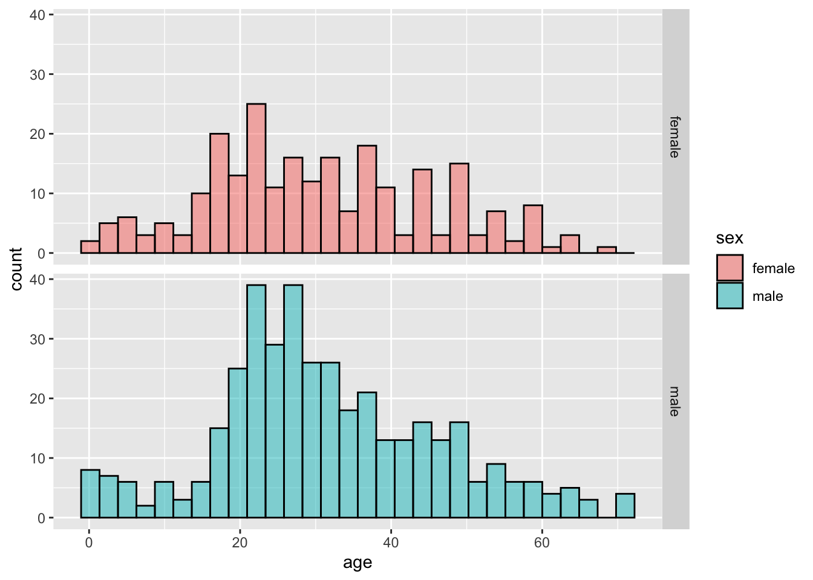
Pretty good. Now, let’s finally add the viridis color palette. ggplot2 has some built in functions that you can just add using the + operator to change the color, like this:
ggplot(titanic_data, aes(x = age, fill = sex)) +
facet_grid(rows = "sex") +
geom_histogram(alpha = 0.5, color = "black",
position = position_identity()) +
# This function changes the color palette
scale_fill_viridis_d()`stat_bin()` using `bins = 30`. Pick better value `binwidth`.Warning: Removed 680 rows containing non-finite outside the scale range
(`stat_bin()`).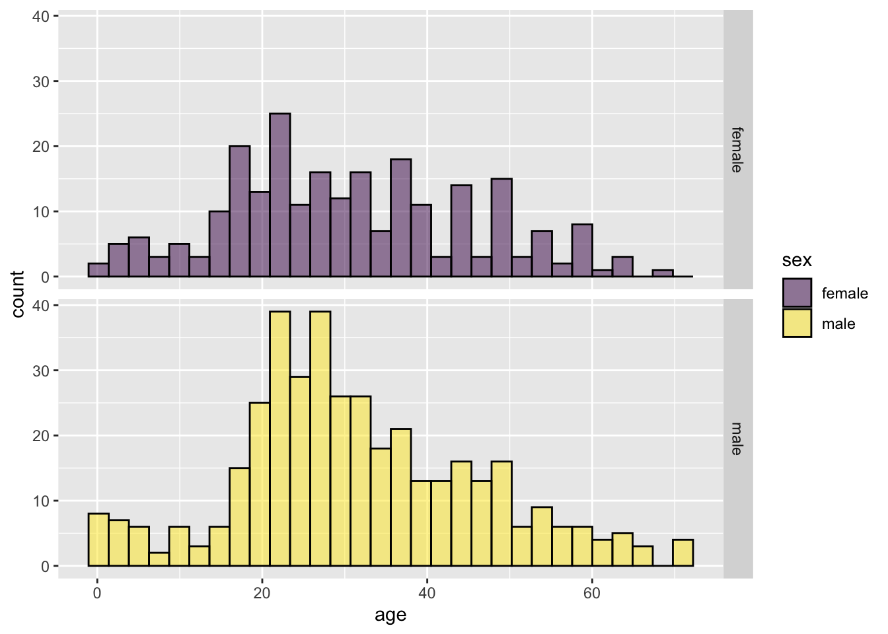
Getting help
The help pages in R are the main source of help, but the amount of detail might be off-putting for beginners. For example, to explore the options for ggplot(), enter the following into the R Console.
help(ggplot)
# you can also use
?ggplotThis will cause the contents of the manual page for this function to appear in the Help window in RStudio Cloud. These manual pages are often frustratingly technical. An additional aid is to simply google the name of the function—there are a great number of resources online about R.
Questions
Use the data from “countries.csv” to practice making some graphs.
- Read the data from the file “countries.csv” in the “data” folder. (Hint: we did this in the last lab - you need to use
read.csv(), use the correct path, and give the object a name.) - Make sure that you have run
library(ggplot2). Why is this necessary for the remainder of this question? - Make a histogram to show the frequency distribution of values for
measles_immunization_oneyearolds, a numerical variable. (This variable gives the percentage of 1-year-olds that have been vaccinated against measles.) Describe the pattern that you see. - Make a bar graph to show the numbers of countries in each of the continents. (The categorical variable continent indicates the continent to which countries belong.)
- Draw a scatterplot that shows the relationship between the two numerical variables
life_expectancy_at_birth_maleandlife_expectancy_at_birth_female.
- Read the data from the file “countries.csv” in the “data” folder. (Hint: we did this in the last lab - you need to use
The ecological footprint is a widely-used measure of the impact a person has on the planet. It measures the area of land (in hectares) required to generate the food, shelter, and other resources used by a typical person and required to dispose of that person’s wastes. Larger values of the ecological footprint indicate that the typical person from that country uses more resources.
The countries data set has two variables showing the ecological footprint of an average person in each country.
ecological_footprint_2000andecological_footprint_2012show the ecological footprints for the years 2000 and 2012, respectively.- Plot the relationship between the ecological footprint of 2000 and of 2012.
- Describe the relationship between the footprints for the two years. Does the value of ecological footprint of 2000 seem to predict anything about its value in 2012?
- From this graph, does the ecological footprint tend to go up or down in the years between 2000 and 2012? Did the countries with high or low ecological footprint change the most over this time? (Hint: you can add a one-to-one line to your graph by adding
+ geom_abline(intercept = 0, slope = 1)to yourggplot()command. This will make it easier to see when your points are above or below the line of equivalence.)
Plotting categorical and numerical variables: use the countries data again. Plot the relationship between continent and female life expectancy at birth. Describe the patterns that you see.
Muchala (2006) measured the length of the tongues of eleven different species of South American bats, as well as the length of their palates (to get an indication of the size of their mouths). All of these bats use their tongues to feed on nectar from flowers. Data from the article are given in the file “BatTongues.csv”. In this file, both Tongue Length and Palette Length are given in millimeters. Each value for tongue length and palate length is a species mean, calculated from a sample of individuals per species.
Import the data and inspect it using
summary(). You can call the data set whatever you like, but in one of the later steps we’ll assume it is calledbat_tongues.Draw a scatter plot to show the association between palate length and tongue length, with tongue length as the response variable. Describe the association: is it positive or negative? Is it strong or weak?
All of the data points that went into this graph have been double checked and verified. With that in mind, what conclusion can you draw from the outlier on the scatterplot?
Let’s figure out which species is the outlier. To do this, we’ll use the
subsetfunction from Lab 1. Remember, the functionsubsetgives us the row (or rows) of a data frame that has a certain property. Looking at the graph, we can tell that the point we are interested in has a very longtongue_length, at least over 80 mm long! Use subset to figure out the species name of this unusually long-tongued bat.The unusual species is Anoura fistulata (See a photo here). This species has an outrageously long tongue, which it uses to collect nectar from a particular flower (can you guess what feature of the flower has led to the evolution of such a long tongue?). See the article by Muchala (2006) to learn more about the biology of this strange bat.
Improve your figure! Pick one of the plots you made using R today. What could be improved about this graph to make it a more effective presentation of the data?